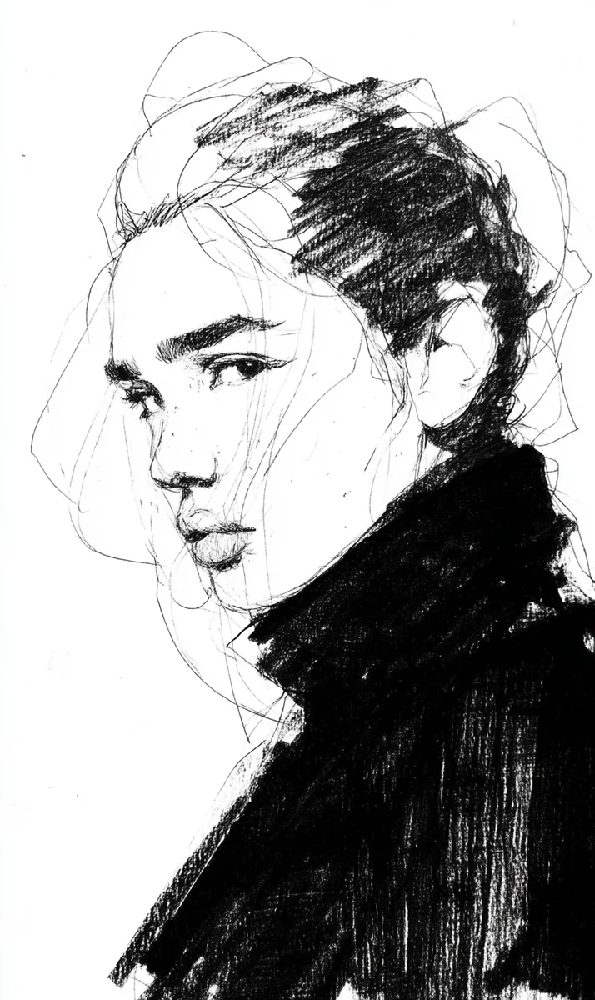

붓끝에서 먹물이 한 방울 떨어졌다. 차민해는 그 방울이 종이에 번지기 전에 닦아냈다.
[A drop of ink fell from the tip of the brush. Cha Minhae wiped it away before it could spread on the paper.]
“앉으세요.”
[”Sit, please.”]
문을 열고 들어온 사람은 검은 외투를 입고 있었다. 외투가 너무 커서 어깨가 두 번 접혀 있었다.
[The person who walked in was wearing a black coat. It was so big that the shoulders were folded twice.]
“예약하셨죠. 임재희 씨.”
[”You had a reservation. Ms. Im Jaehee.”]
“네.”
[”Yes.”]
그 외에는 아무 말도 없었다. 민해는 그것이 좋았다. 말이 많은 손님은 얼굴이 흐려졌다. 입이 움직일 때마다 영혼의 가장자리가 닳아 없어지는 것 같았다.
[Nothing else was said. Minhae liked that. Customers who talked a lot had blurry faces. It was as if every time the mouth moved, the edges of the soul wore away.]
서울 익선동의 좁은 골목, 간판도 없는 문 뒤에서 민해는 이 일을 칠 년째 하고 있었다. 사람들은 그녀를 ‘마지막 시선을 모으는 자’라고 불렀다. 큰 변화가 오기 전에 얼굴을 그려 달라고 찾아오는 손님들이 있었다. 결혼 전날, 이혼 전날, 떠나기 전날, 죽기 전날.
[In a narrow alley in Ikseon-dong, Seoul, behind a door with no sign, Minhae had been doing this work for seven years. People called her ‘the collector of last glances.’ Some customers came asking her to paint their face before a big change. The day before a wedding, the day before a divorce, the day before leaving, the day before dying.]
“무슨 변화예요?”
[”What kind of change?”]
재희는 대답하지 않았다. 창문 쪽으로 고개를 반쯤 돌린 채, 눈을 살짝 내려뜨고 있었다. 턱 아래에 작은 점이 하나 있었다. 민해는 그 점부터 그리기 시작했다.
[Jaehee did not answer. Head turned halfway toward the window, eyes slightly lowered. There was a small mole below the chin. Minhae began drawing from that mole.]
규칙이 있었다. 손님이 무슨 일인지 말하지 않으면, 민해는 묻지 않는다. 두 번까지만 묻는다. 세 번째는 묻지 않는다.
[There was a rule. If the customer did not say what was happening, Minhae did not ask. She asked only twice. The third time, she did not ask.]
“오늘 안에 끝날까요?”
[”Will it be done today?”]
“세 시간이면 됩니다.”
[”Three hours will do.”]
민해의 작업실에는 시계가 없었다. 대신 창밖 감나무 그림자가 시간을 알려 주었다. 그림자가 책상 모서리에 닿으면 한 시간. 바닥에 길게 누우면 세 시간.
[There was no clock in Minhae’s studio. Instead, the shadow of the persimmon tree outside told time. When the shadow touched the desk corner, one hour. When it stretched long on the floor, three hours.]
붓이 머리카락을 그리기 시작했을 때, 민해는 손을 멈췄다.
[When the brush began to draw the hair, Minhae stopped her hand.]
“재희 씨.”
[”Ms. Jaehee.”]
“네.”
[”Yes.”]
“머리 위가 이상합니다.”
[”Something above your head is strange.”]
재희는 고개를 들지 않았다.
[Jaehee did not raise their head.]
민해는 본 적이 있었다. 아주 가끔. 머리카락이 종이 위에서 스스로 흐트러지는 것. 선이 하나의 머리카락이 아니라 수백 개의 엉킨 실처럼 번지는 것. 그것은 손님의 기억이 새어 나오고 있다는 뜻이었다.
[Minhae had seen it before. Very rarely. Hair that unraveled by itself on the paper. Lines that spread not as one strand but as hundreds of tangled threads. It meant the customer’s memories were leaking out.]
“기억을 지우러 가시는 거군요.”
[”You are going to erase your memories.”]
재희의 어깨가 아주 살짝 흔들렸다. 외투 속에서.
[Jaehee’s shoulders trembled very slightly. Inside the coat.]
“어떻게 아셨어요?”
[”How did you know?”]
“그림이 먼저 알았어요.”
[”The painting knew first.”]
민해는 붓을 내려놓았다. 찻잔을 들어 식은 보리차를 한 모금 마셨다. 입 안이 썼다.
[Minhae put down the brush. She lifted a cup and took a sip of cold barley tea. Her mouth was bitter.]
“서울대학교병원 뒤의 그 병원이죠.”
[”That clinic behind Seoul National University Hospital.”]
“네.”
[”Yes.”]
“뭘 지우세요?”
[”What are you erasing?”]
재희는 오래 침묵했다. 창밖 감나무 그림자가 책상 모서리를 넘어 무릎까지 기어 왔다.
[Jaehee was silent for a long time. The persimmon shadow crept past the desk corner to their knees.]
“사람 하나요.”
[”One person.”]
“사랑했던 사람이요.”
[”Someone you loved.”]
“아니요.”
[”No.”]
민해의 손이 아주 잠깐 떨렸다. 붓자루에서 작은 나무 가시가 손가락을 찔렀다.
[Minhae’s hand trembled for just a moment. A small wood splinter from the brush handle pricked her finger.]
“미워했던 사람이군요.”
[”Someone you hated, then.”]
“미워하지도 않았어요. 그냥 너무 오래 기억해서요. 다른 게 들어갈 자리가 없어요.”
[”I didn’t hate them either. I’ve just remembered too long. There’s no room for anything else to come in.”]
민해는 고개를 끄덕였다. 다시 붓을 들었다. 이번에는 머리카락을 그리지 않았다. 머리 위의 엉킨 선들을 그대로 두었다.
[Minhae nodded. She picked up the brush again. This time she did not draw the hair. She left the tangled lines above the head as they were.]
“재희 씨. 제가 한 가지 말씀드려도 될까요.”
[”Ms. Jaehee. May I tell you one thing.”]
“네.”
[”Yes.”]
“저는 칠 년 동안 변화 전의 얼굴을 그렸어요. 결혼, 이혼, 이별, 병. 그런데 기억을 지우러 가는 손님은 딱 한 번 더 있었어요.”
[”For seven years I’ve painted faces before change. Marriages, divorces, farewells, illness. But there was only one other customer who went to erase a memory.”]
“그 사람은 어떻게 됐어요?”
[”What happened to that person?”]
민해는 창밖을 보았다. 그림자가 이제 재희의 신발 위에 있었다.
[Minhae looked out the window. The shadow was now on top of Jaehee’s shoes.]
“일 년 뒤에 다시 왔어요. 지웠던 그 사람을 찾아 달라고.”
[”A year later, they came back. Asking me to find the person they had erased.”]
“찾으셨어요?”
[”Did you find them?”]
“그림은 지운 것도 기억해요.”
[”Paintings remember what was erased too.”]
재희가 처음으로 민해를 정면으로 쳐다보았다. 눈이 아주 까맸다. 속눈썹이 젖어 있었지만 눈물은 흐르지 않았다.
[For the first time, Jaehee looked at Minhae straight on. Their eyes were very black. The lashes were wet but the tears did not fall.]
“그럼 그리지 말아 주세요. 오늘.”
[”Then please don’t paint. Today.”]
“돈은요?”
[”And the payment?”]
“드릴게요. 그냥 여기 앉아 있을게요. 세 시간만.”
[”I’ll pay. I’ll just sit here. For three hours.”]
민해는 종이를 덮었다. 붓을 씻었다. 그리고 맞은편에 앉았다. 두 사람은 아무 말도 하지 않았다. 감나무 그림자가 바닥을 가로지르는 동안.
[Minhae covered the paper. She washed the brush. Then she sat across. The two said nothing. While the persimmon shadow crossed the floor.]
세 시간이 지난 뒤, 재희는 외투를 여미고 일어섰다.
[After three hours, Jaehee fastened the coat and stood up.]
“병원에는 안 가시는 거죠.”
[”You’re not going to the clinic.”]
“모르겠어요. 아직.”
[”I don’t know. Not yet.”]
문이 닫힌 뒤, 민해는 덮었던 종이를 다시 열어 보았다. 반쯤 그린 얼굴 위에, 머리카락 대신 엉킨 선들이 아직 남아 있었다. 그런데 선들이 조금 줄어들어 있었다.
[After the door closed, Minhae opened the covered paper. On the half-drawn face, instead of hair, the tangled lines still remained. But they had lessened a little.]
민해는 웃었다. 그리고 종이를 서랍 깊숙이 넣었다. 일 년 뒤를 위해서.
[Minhae smiled. Then she put the paper deep into a drawer. For a year later.]